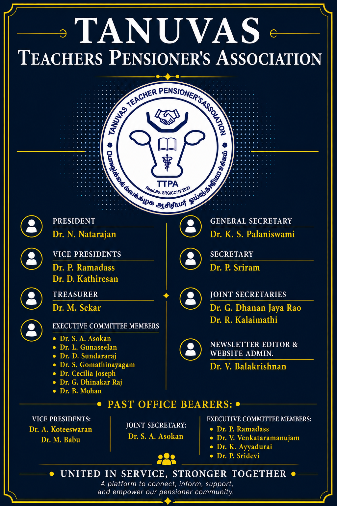

Our Vision
Preserving Memories. Sharing Knowledge. Celebrating Lives.
Where Every Story Can Be Read, Heard and Seen.
The TTPA Multimedia Newsletter is envisioned as a living digital platform that goes beyond the limitations of a conventional printed or PDF newsletter. It brings together the memories, knowledge, achievements and experiences of members of the TANUVAS Teachers Pensioners' Association and preserves them for present and future generations.
Designed especially with senior readers in mind, the newsletter provides clear and readable presentation, simple navigation, mobile-friendly access and indexed content that enables readers to reach articles, photographs, archives and useful information without having to navigate through lengthy documents.
Multimedia features enrich this experience by enabling articles not only to be read, but also heard through narration, including AI-assisted cloned-voice narration by contributing authors wherever appropriate. Photographs, videos, webinars and other digital media further help preserve the personalities, voices and experiences associated with our professional community.
Its expanding archives are intended to serve as a permanent digital repository of newsletters, distinguished personalities, institutional history, photographs, remembrance records, Government Orders, procedures, downloadable forms and other materials of lasting value to pensioners and family pensioners.
Interactive educational features, including veterinary-oriented quizzes, games and knowledge activities, are also envisaged to make the newsletter informative, engaging and enjoyable.
TTPA Office Bearers
The office bearers of the TANUVAS Teachers Pensioners' Association who guide and support the activities of the Association.

What the Multimedia Newsletter Offers
📖 Multimedia Articles
Articles presented in a clear, readable format with photographs, illustrations and multimedia support wherever appropriate.
🔊 Author Voice Narration
Selected articles may be heard through narration, including AI-assisted cloned-voice narration by contributing authors wherever available and appropriate.
🗂️ Searchable Archives
Permanent digital archives of distinguished stalwarts, remembrance records, institutional history, historical photographs and previous newsletter issues.
📑 Pensioners' Resources
Convenient access to Government Orders, step-by-step procedures, downloadable forms and other reference materials useful to pensioners and family pensioners.
📷 Photos & Videos
Photographs, galleries, webinars and videos that help preserve institutional memories, professional activities and important occasions.
🧠 Interactive Learning
Veterinary-oriented quizzes, games and other knowledge-based activities designed to make the newsletter informative, engaging and enjoyable.